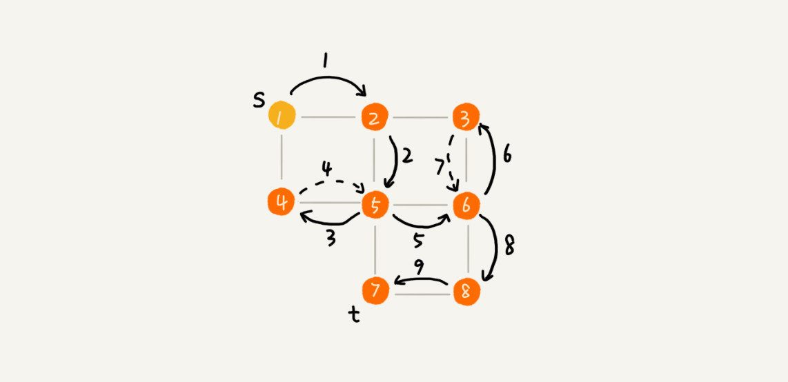

图上的搜索算法，最直接的理解就是，在图中找出从一个顶点出发，到另一个顶点的路径。
什么是“搜索”算法？
图上的搜索算法，最直接的理解就是，在图中找出从一个顶点出发，到另一个顶点的路径。
广度优先搜索（BFS）
广度优先搜索（Breadth-First-Search），我们平常都简称 BFS。直观地讲，它其实就是一种“地毯式”层层推进的搜索策略，即先查找离起始顶点最近的，然后是次近的，依次往外搜索。
时间复杂度O(V+E)， V表示顶点的个数，E表示边的个数
空间复杂度为O(V)，即需要额外存储顶点的个数

深度优先搜索（DFS）
深度优先搜索（Depth-First-Search），简称 DFS。
深度优先搜索用的是一种比较著名的算法思想，回溯思想。
时间复杂度 O(E), E 表示边数
空间复杂度 O(V), V表示顶点个数

内容小结
广度优先搜索，通俗的理解就是，地毯式层层推进，从起始顶点开始，依次往外遍历。广度优先搜索需要借助队列来实现，遍历得到的路径就是，起始顶点到终止顶点的最短路径。深度优先搜索用的是回溯思想，非常适合用递归实现。换种说法，深度优先搜索是借助栈来实现的。在执行效率方面，深度优先和广度优先搜索的时间复杂度都是 O(E)，空间复杂度是 O(V)。